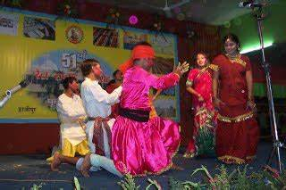

üíÉ Traditional Dance Forms of Bihar ‚Äì Cultural Heritage in Motion
Jhumar Dance –
A slow and graceful dance performed by women during weddings and festive occasions.
The dance reflects the joy and spirit of the community.
Bidesia Dance –
A popular folk dance that narrates stories of migration, separation, and cultural transition.
It is often accompanied by emotional songs.
Jhijhiya –
A vibrant dance performed by women to please the rain god.
Dancers carry earthen pots with lit lamps on their heads, symbolizing devotion.
Domkach Dance –
A marriage dance performed by women of Bihar, expressing joy and happiness during wedding ceremonies.

Fagua Dance –
A colorful dance performed during the Holi festival.
Dancers celebrate with vibrant movements and joyous songs.

Karma Dance –
A tribal dance performed during the worship of the Karma tree.
Dancers move rhythmically around the tree while singing folk songs.
Jat-Jatin –
A popular rural dance that depicts the story of Jat and Jatin, reflecting themes of love and hardship.
Launda Naach –
A traditional dance performed by male dancers dressed as women.
It is a popular form of entertainment during weddings and festivals.
üé∂ Traditional Music of Bihar ‚Äì Soulful Melodies of Tradition
Bhojpuri Folk Songs –
Celebratory songs reflecting the daily lives, love, and hardships of the people.
These songs are often accompanied by traditional instruments.

Kajri –
A monsoon-themed folk music sung by women to express love and longing during the rainy season.
Chhath Songs –
Devotional songs sung during the Chhath Puja, paying homage to the Sun God.

Maithili Songs –
Traditional songs of the Mithila region, often sung during weddings and cultural festivities.
Sohar Songs –
Joyous songs performed to celebrate childbirth and blessings for the newborn.
üéº Folk and Devotional Music
Sohar Songs –
Sung during childbirth ceremonies, these devotional songs express joy and blessings for the newborn.
Bhajans and Kirtans –
Devotional songs sung during religious ceremonies and rituals.
These songs create an atmosphere of spirituality and devotion.